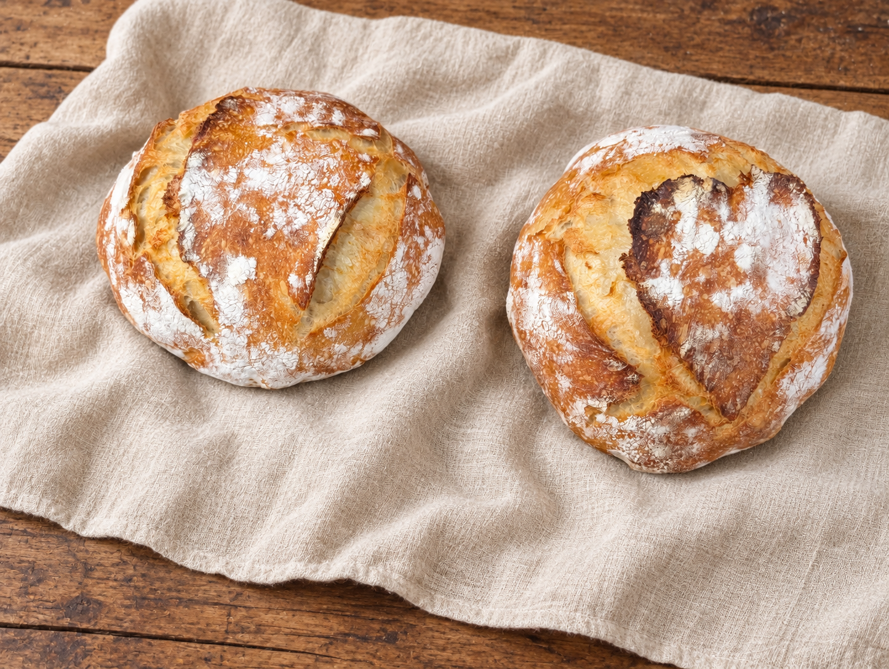
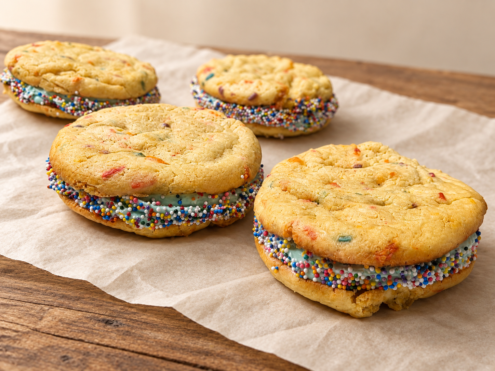
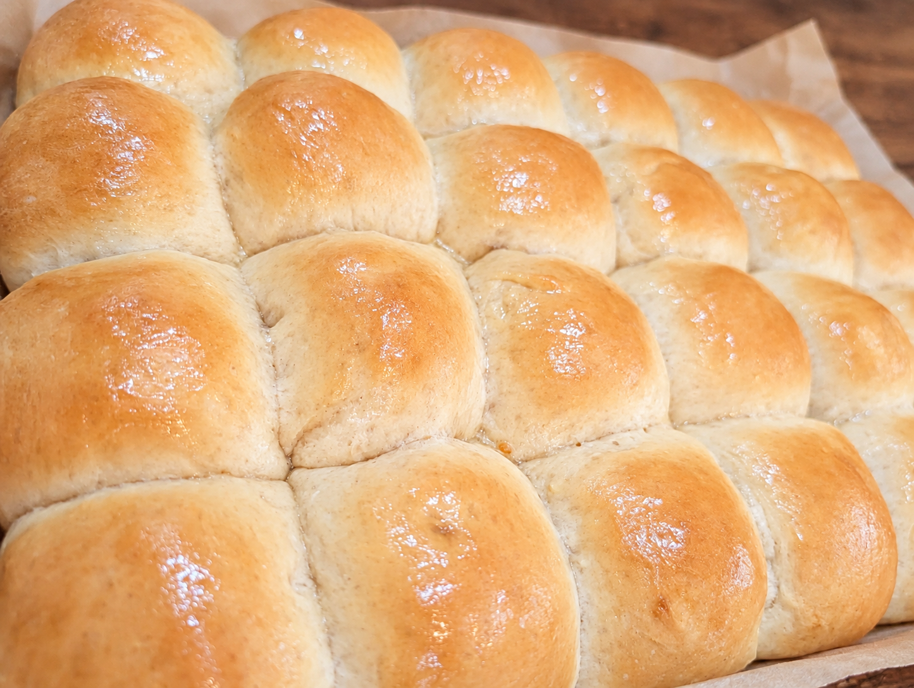
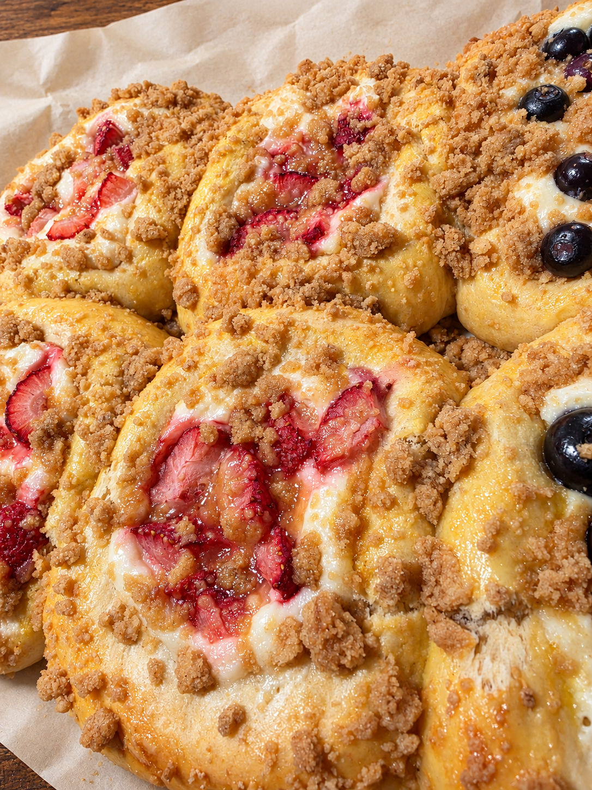

Homemade Bread
Freshly baked loaves to bring something special to your table.
Homemade • Seasonal • Local
From homemade breads to sweet treats, find something delicious for your everyday moments and seasonal celebrations.
View Menu
Discover Your Favorites

Freshly baked loaves to bring something special to your table.

A family favorite, available in plain and seasoned varieties.

Explore sweet favorites inspired by the season.
Meet Shaffeer Farms Bakery
Get to know the baker behind Shaffer Farms Bakery and the story behind the homemade breads, Ryan Rolls, and sweet treats.
Our StoryFind Us Locally
Looking for Shaffer Farms Bakery near you? Check our market and event updates to plan your visit.